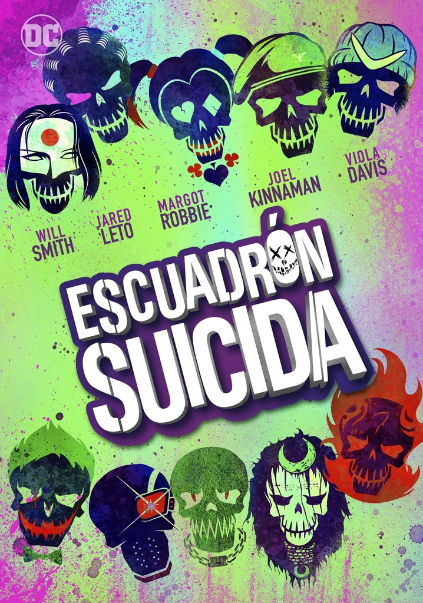
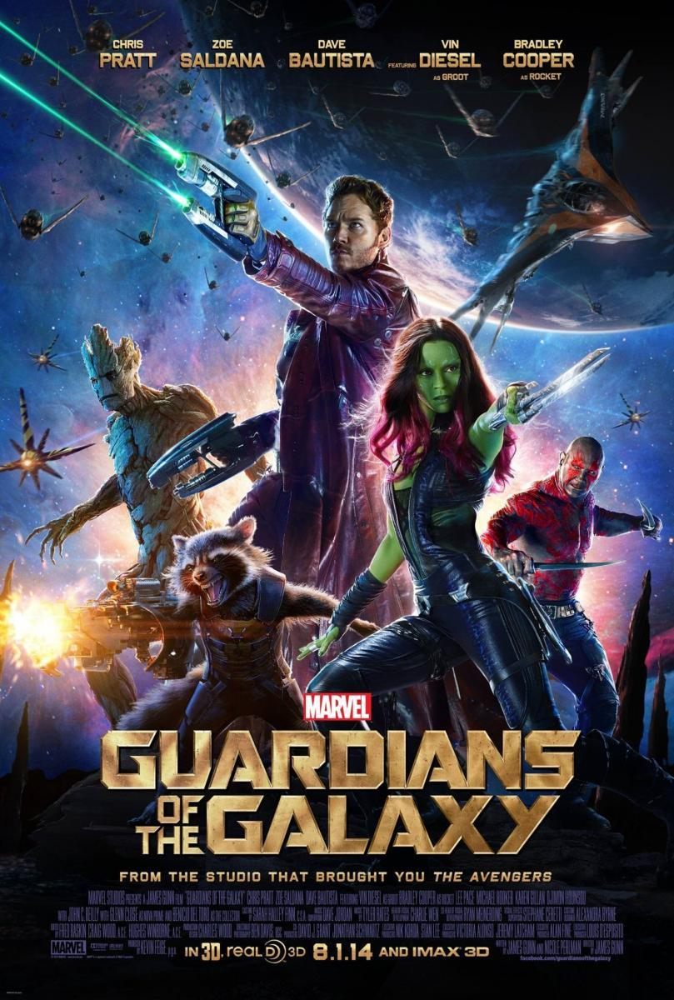
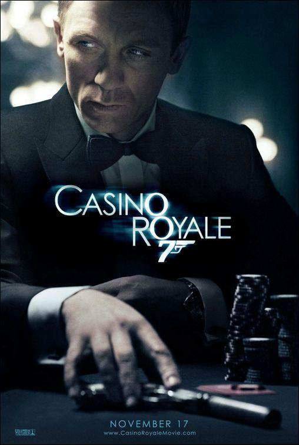
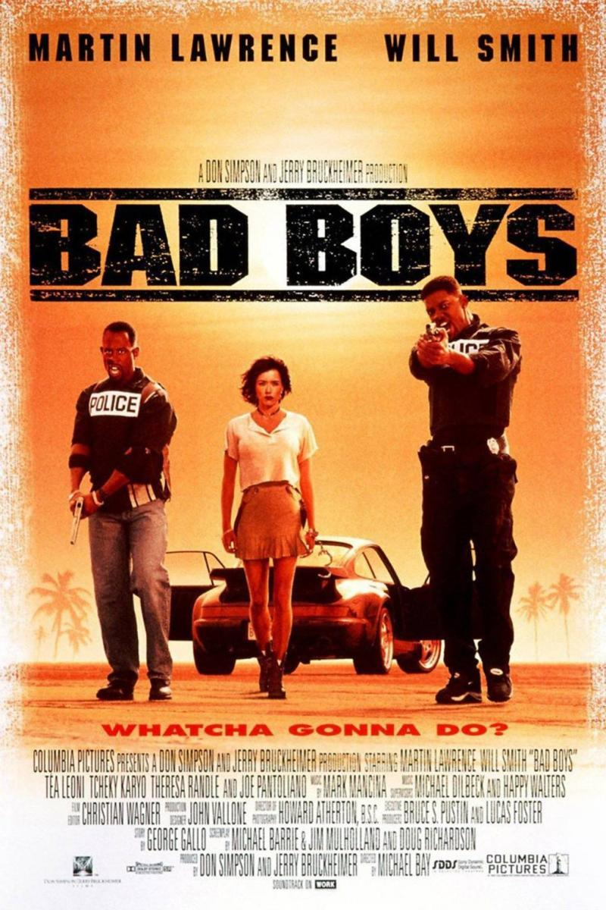
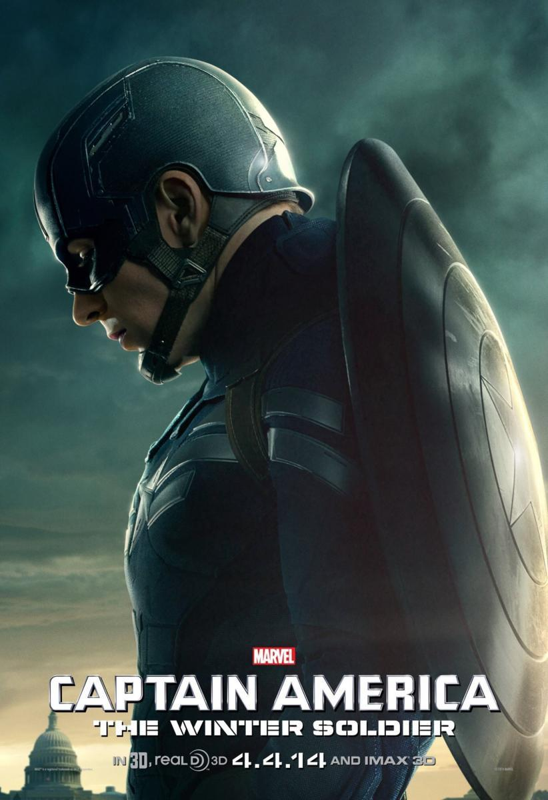

Escuadron Suicida
Un grupo de super villanos se encuentran encerrados en Belle Reve, una prisión de alta seguridad con la tasa de mortalidad más alta de Estados Unidos. Para salir de allí harán cualquier cosa, incluso unirse al grupo Task Force X, dedicado a llevar a cabo misiones suicidas bajo las órdenes de Amanda Waller.
Guardianes de la Galaxia
Los Guardianes de la Galaxia son una banda de forajidos intergalácticos, que se unieron para proteger la galaxia de las amenazas interplanetarias, bajo el mando de Rocket Raccoon. Peter Quill, Gamora, Rocket, Groot y Drax se conocieron en la prisión Kyln, del cual escaparon para venderle el Orbe a Taneleer Tivan.
Casino Royale
La primera misión del agente británico James Bond como agente 007 lo lleva hasta Le Chiffre, banquero de los terroristas de todo el mundo. Para detenerlo y desmantelar la red de terrorismo, Bond debe derrotarlo en una arriesgada partida de póquer en el Casino Royale. Durante su misión, el agente sentirá una fuerte atracción por Vesper Lynd, una hermosa oficial encargada de vigilar el dinero del gobierno.
Dos policías rebeldes
Dos policías de Miami sólo tienen 72 horas para encontrar cien millones de dólares en heroína robados del almacén de pruebas de su propia comisaría.
Capitán América y el Soldado de Invierno
Steve Rogers, más conocido como Capitán América, sigue esforzándose por adaptarse a la sociedad moderna mientras continúa trabajando para SHIELD con Nick Furia. Con la ayuda de la Viuda Negra y de Falcon, tendrá que enfrentarse a un poderoso e inesperado enemigo: el soldado de invierno.